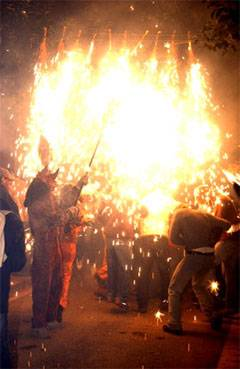

|
els
 NO anirem a Can Galta Cremada
NO anirem a Can Galta Cremada
Quina es la nostra sorpresa quan el passat més de març, mentre llegíem
el Ciutat Nord,
ens trobem a les pàgines centrals una nota del Districte
on s'hi feia referència sobre la
possible ubicació de Diables de Sant Andreu
en el nou espai de Can Galta Cremada.
En aquest article es donava per suposat que algunes Entitats, com
es el cas de
Diables de Sant Andreu, ja havíen donat
la seva conformitat al projecte, això, evidentment,
no era pas així. Just en aquelles dates encara estàvem en plenes
negociacions sobre la viabilitat
de l'espai segons les necessitats de cada Entitat. Encara no havíem
decidit res que el Districte
ja s'havia penjat la medalla de propulsors de la Cultura
Popular de Sant Andreu,
publicant un article on hi afirmaven coses que no eren certes. |
|
Cal
remarcar que aquesta iniciativa no ha comptat des de un bon principi
amb la col·laboració de
les Entitats que pretenen ficar dins d'aquest centre, sinó
que, per contra, s'ens està posant
amb calçador una idea unilateral aquest "Centre de Cultura
Popular" que ara tant en parlen.
Diables de Sant Andreu fa molts anys
que d'una manera altruista i espontània ho porta fent en els diferents
espais en els quals s'hi ha trobat. Ara, desprès de 25 anys
fent correfocs, espectacles, cercaviles,
actes en solidaritat amb diferents col·lectius i compartint
el nostre espai
amb diferents entitats o grups de l'àmbit de la cultura, el Districte
de Sant Andreu ens diu que
ens busquem un espai per a emmagatzemar-hi el material (que no
es poc) i que ens el sufraguem
de les nostres butxaques. Ens diu també que tenen la legitimitat
de fer-ho i ni tant sols
tenen en consideració les nostres alternatives per a poder entrar
en condicions en aquest nou local
que ens ofereixen, que no acompleix les necessitats mínimes per
desenvolupar la tasca associativa.
|

|
|
Quina
casualitat que el nou espai que el Districte ofereix, sigui
un soterrani sense cap possibilitat
d'edificar-hi i per tant de treure'n un profit econòmic, com és
el cas de l'actual local que gestionem,
que des de fa un temps està afectat per un pla urbanístic
que preten fer-ne "zona verda", i, com no, edificar-hi pisos, que
possiblement no seran assequibles per a moltes de les persones
que actualment busquen vivenda.
Això no es donar suport a la Cultura Popular, es un pas ferm
cap a la institucionalització forçada
d'una Entitat que històricament s'ha autogestionat en tots els aspectes.
El profit polític que pretenen treure d'aquest assumpte es evident,
per ignorància, incompetència o partidisme estan a punt d'ofegar
la nostra Cultura Popular i a sobre volen aparèixer com defensors
del que en Cardelús (gerent del Districte) va anomenar
un espai de referència de la cultura popular.
Aquesta es la seva unilateral i "progressista" manera d'organitzar
la Cultura del Poble. |
Quines
penques !!!! |